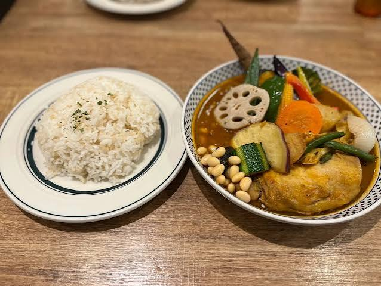
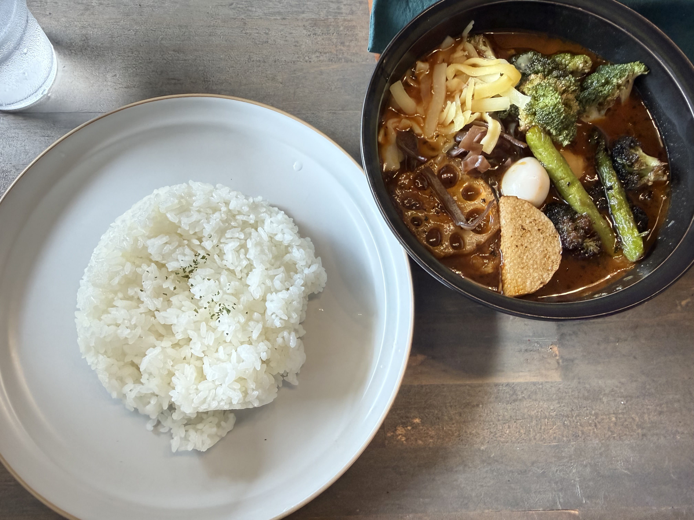
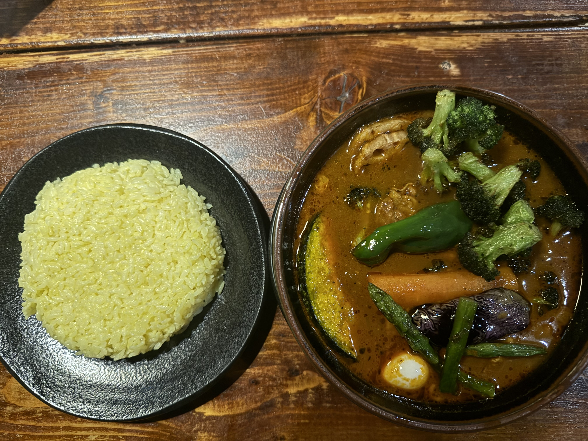
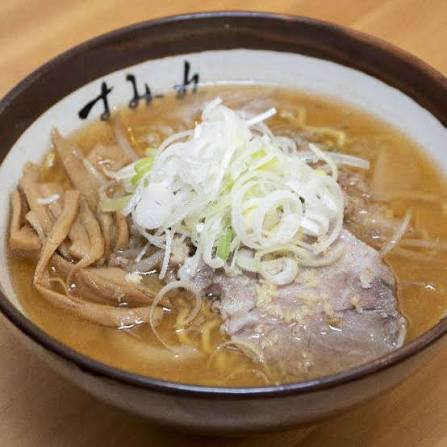
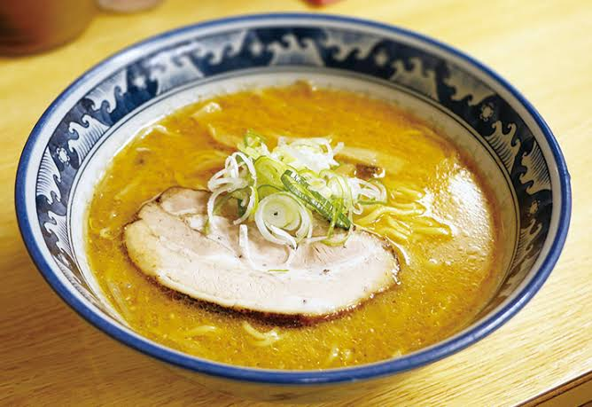
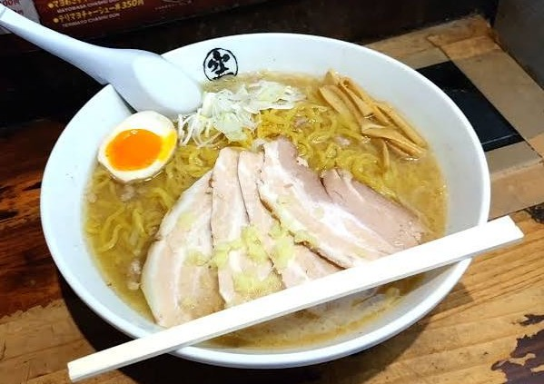

ここに紹介する所以外にもいい所はきっとあるので自分で調べると良い。
（※ 値段や店舗情報はもしかしたら間違ってるかもだから自分でちゃんと調べてね）
北海道のスープカレーは SAMURAI、SAMA、RAMAI の3強を押さえておけばいいと思ってます。（人によってはココに GARAKUが入る）
SAMURAI は実は名古屋にも店舗があるので、せっかくなら SAMA か RAMAI かなって感じ。僕の個人的な好みだとSAMA。
1つ覚えておいて欲しい。スープカレーを食べるなら、揚げブロッコリーのトッピングはマスト。まじで。

SAMURAIは王道って感じ。野菜の甘味を楽しむなら◎

刺激的な味で中毒性あるのがSAMA。僕はここがイチオシ。

RAMAIは優しくてボリュームもある。ライスも特徴的。
札幌のラーメンと言えば味噌。味噌ラーメンといえば“すみれ”以外の選択肢なし。
すみれで修業を積んだ店主がやっているお店の“彩未“、彩未で修業を積んだ店主がやっている”美椿“というお店があるけど札幌からはちょっと遠い。
そして札幌駅すぐにはこのすみれの系譜を持つラーメン店がない！
なのですすきのまで行けば3店舗ほどあるのでこの3店舗を候補にしてみたらどうかと思うわけです。
もちろんそれ以外にもおいしい所はたくさんあると思うので調べてみてお好みで行くといいと思う。

味噌と言えばすみれ。まあ間違いはない。

すみれ系譜

空は実は新千歳空港にもあるのでそこで食べてもいいかもしれない。